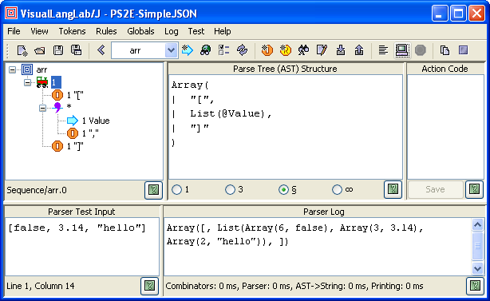
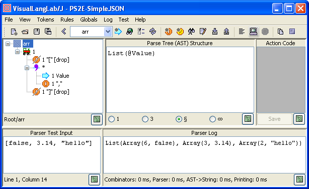
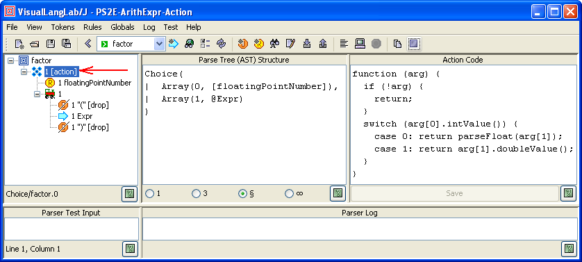

Figure-1. Using description to locate node AST
|
For Ver-10.01 or higher only! If you are using an older version, follow this tutorial instead. Beginning Ver-10.01, the title bar of the About VisualLangLab dialog box displays the version number. The latest jar file can be downloaded here: VLL4J.jar. |
The terms parse-tree and AST (short for Abstract Syntax Tree) are used interchangably thoroughout the documentation to mean the same thing -- the structure of information gathered during the parsing process. This is how Wikipedia defines AST.
The discussion below explains two related issues: how VisualLangLab determines the structure of the AST for any parser-rule (or grammar-tree), and how the user should design and program action-code to process an AST. The same knowledge is also required when writing a custom application as described in Using the API
This version (10 or higher) of VisualLangLab is written in Java with no other dependencies, so the AST is expressed in terms of standard Java/JVM types. The AST of a complete parser-rule (or grammar-tree) is built up by recursively nesting these structures as required. Examples in the following sections illustrate this concept.
The AST structure of any particular grammar-tree is determined by the arrangement, type, multiplicity, and other attributes of its nodes. Starting from the root-node, the following rules are applied recursively:
String (identical to its
pattern)String (the portion of the input
that matches its pattern -- often called the lexeme)Object[]) containing
the items contributed by its child nodesnew Object[2])
where the first member is a boxed int
specifying the (0-based) index of the matching alternative, and the second member is the
AST contributed by the matched alternativeList<Object> containing the ASTs
of all the matched itemsAdditionally, certain annotations cause the structure defined above to be modified in the following ways:
new Object[1]). The contained element is either an AST or null
(if the node did not match the input)List<Object>. An empty list is returned if
the multiplicity is *, and no matching elements were found in the inputAll primitive values in the AST are subject to autoboxing, so explicit unboxing may have to be done if the language used for processing the AST does not know about autoboxing/unboxing. This is particularly the case when using JavaScript in action-code functions (see below).
The examples below illustrate these principles using grammar trees from the built-in parser for SimpleJSON. Remember that the AST shown in the figures is the AST of the selected node. Also, remember that the root-node of a grammar-tree merely reflects the AST of the contained tree.
It is sometimes difficult to determine which rule-tree node contributed to a segment of the AST. To help with these situations, VisualLangLab appends the description field of a rule-tree node (if provided) to the AST segment produced for it. Figure-1 below shows an example of such tagging of portions of the AST. You can add a description to a rule-tree node by right-clicking the node and choosing Description from the context-menu.
Figure-1. Using description to locate node AST
Figure-2 below illustrates the AST of a Sequence node. It also shows the result of testing the grammar-tree with some user-provided input.

Figure-2. Sequence node AST
The text displayed under Parse Tree (AST) Structure (on the right of the grammar-tree) is the structure of the AST produced by the parser. Observe that the structure is an array with three elements (corresponding to the number of child-nodes of the Sequence node). The format used for the array's elements is described below:
The panels at the bottom of the GUI are used for testing the parser. Some test input ("count" : 55) has been typed into the Parser Test Input area, and the result of running the parser appears under Parser Log. The AST actually generated is shown here.
As described in Testing Parsers the selected
rule-tree is run by choosing Test -> Parse text from the main menu or by
clicking on the Parse text toolbar button ( ).
).
The grammar-tree in Figure-3 below illustrates the AST of a Choice node.

Figure-3. Choice node AST
The display shows the structure of the AST of a Choice node.
The value actually returned by the parser is any one of the arrays
(Array(int, ...)) shown. The first member of each array is the
index of the array, while the second member is the AST obtained by parsing
the matching input text.
The testing area shows the result of parsing the text 3.14.
The result of the run is Array(3, 3.14).
The first member of the array in this example (the value 3)
is the 0-based index of the matching alternative (node floatingPointNumber).
The grammar-tree in Figure-4 below illustrates the AST of a RepSep node.

Figure-4. RepSep node AST
Observe the the AST in this case is a 2-level structure -- a List
nested within an Array. The List represents the
RepSep, while the Array represents the containing
Sequence.
The parser when tested with the following input: [false, 3.14, "hello"] produces this AST as output:
Array(
[,
List(
Array(6, false),
Array(3, 3.14),
Array(2, "hello")
),
]
)The red parts come from the RepSep, while the blue parts come from the Value rule it uses.
Our last example Figure-5 below illustrates the AST of a Sequence node with just 1 contributing node. It also shows the effect of applying the drop annotation to the child node of a Sequence.

Figure-5. Sequence node AST with 1 contributing node
This example uses the same grammar-tree as the previous example, but applies the drop annotation to the Literal nodes LBKT and RBKT (see Editing the Grammar Tree). The presence of the attribute is clearly evident in the grammar tree from the textual annotation as well as the overlay applied to the basic Literal icon.
The AST changes drastically beacuse of these modifications. The two dropped
nodes do not appear in the AST. And, since the Sequence has just one child node left
that contributes to the AST (the RepSep), the Sequence merely passes on the AST of the
RepSep. It does not need to produce an Array.
Action-code in VisualLangLab is an anonymous JavaScript function associated with any rule-tree node. The code is interpreted by the JVM's embedded Javascript engine (Rhino), and can therefore use the JDK API. This section assumes that the reader understands JavaScript reasonably well.
An action-code function takes one argument that is used in two different ways
(explained below). The value returned by the function depends on the overall
design of the parser, but in general should be an object that becomes a part of
the AST of the parent parser-node. If nothing is returned by any code branch
of the action function, null is assumed to have been returned.
An action-code function is called twice by the parser: first (unconditionally) before parsing of the associated node begins, and second (conditionally) after parsing of the node has ended successfully. The first invocation allows the function to perform any setup actions, while the second invocation is intended for AST processing. The action-code function can distinguish the two invocations by testing the value of its argument. The argument is null during the first invocation, but contains a valid AST (necessarily non-null) during the second invocation. Action-code functions must test the argument's value and act accordingly.
A simple example of the use of action-code functions can be seen in the sample grammar PS2E-ArithExpr-Action. Figure-6 below shows one such action-code function. Observe that a rule-tree node with with associate action-code has the action annotation near the icon (see red arrow in the figure). From Version 10.21, the toolbar's dropdown for rule-names also places a small green arrow-icon (as in Figure-6) near the name of each rules that includes any action functions. The sample grammar PSWP-Payroll-Parser-Combinators has a more extensive example that includes setup (null-argument invocations) as well.
All primitive values in the AST are subject to autoboxing, so explicit unboxing has to be done as JavaScript does not know about this Java concept.

Figure-6. Action code example
To add an action-code function to any rule-tree node, select the node, then type or paste the code into the panel under Action Code, and click the Save button below the panel. The button is enabled whenever the text in the panel is changed.
To facilitate the design of stateful behavior, and provide access to environmental information, action-code functions can use certain predefined global variables. These are listed and described in Table-1 below.
Table-1. Predefined global variables| Name | Description |
|---|---|
vllCol |
The column number of the input position at which |
vllInput |
A JavaScript String containing the input text matching this node after removal of all preceding whitespace characters (wef 10.20) |
vllLine |
The line number of the input position at which |
vllOffset |
The offset of the input position at which the action-code function is called. The value is a JavaScript Number |
vllSource |
The entire source text presented to the parser as a JavaScript String (wef 10.20) |
vllLastNoSuccess |
The Last NoSuccess object created by the parser |
vllParserTestInput |
The GUI's JTextComponent containing user-provided test input
(just under the Parser Test Input label) |
vllParserLog |
The GUI's JTextComponent containing parser log text
(just under the Parser Log label) |
The last two variables above (vllParserTestInput, and vllParserLog) are useful for writing automated test scripts as described in Wrapper with Action Code.
Many action-code functions can be stateless, merely modifying the AST passed in on the fly. But the need to use and manage global state can be unavoidable in certain other applications. For these cases, it is suggested that the a global variable named VLL be used to house all state information. VLL can be set up either as a map or a stack (see sample grammar PSWP-Payroll-Parser-Combinators for an example). A consistently used naming convention and coding pattern will lead to error-free and maintainable parsers/translators.